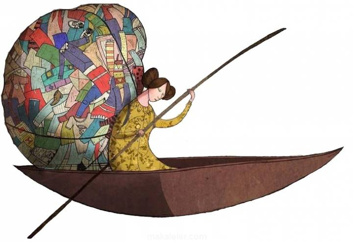
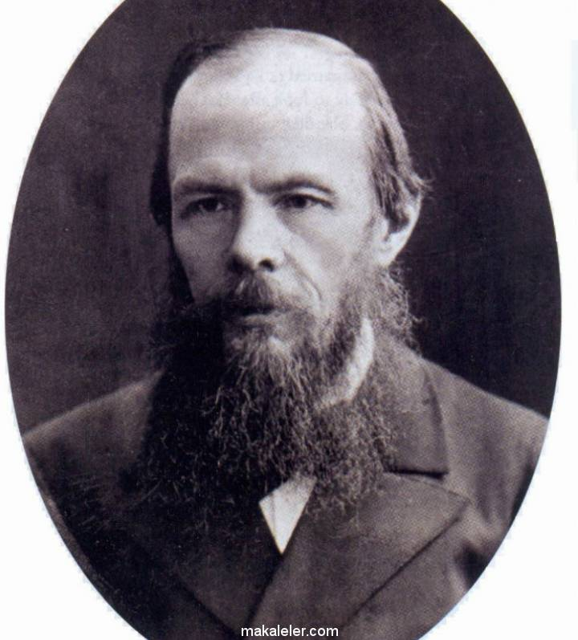

Muhakemetü'l Lügateyn Nedir?
Muhakemetü'l Lügateyn, Orta Asya edebiyatının Çağatay sahasının en önemli temsilcisi tarafından yazıldı. Neredeyse tek başına koca bir Çağatayca döneminin klasik dönemini oluşturan Ali Şir Nevai, sadece şair değil dönemin siyasetçisi ve aydınıdır. Dile olan düşkünlüğü de daha çok dönemin baskın dili Farsçanın şiir diline hakim olması ve Türk şairlerinin Türkçeyi bırakıp Farsça şiirler yazmasıyla peyda oldu. Kendi dönemindeki şairlere bir ders vermek, onlara Türkçeyle yazmanın bir aşağılık duygusu yaratmadığını ifade etmek için yazdı Muhakemetü'l Lügateyn adlı eserini. Son eseridir Ali Şir Nevai’nin bu eseri. Ölümünden bir yıl önce yazmıştır.

Edebiyat Nedir?
Edebiyatın etimolojisini yapmak isterdik ama edebiyatın etimolojisi yok.. Yani, edeb - i – y- at diye bir ayrım söz konusu değil çünkü edebiyat sözcüğü Tanzimat döneminde uydurulmuş bir sözcük.. Tanzimat öncesindeki dönemde “edebiyat” yerine “edeb” ya da “şiir” sözcüğü kullanılırdı. Hatta edebiyat yapana "edib", yapanlara “üdeba” denirdi; şairler şuarası da vardı çünkü Osmanlı edebiyatı zaten çok büyük çoğunlukla şiirlerden meydana geliyordu. Tanzimat döneminde roman, gazete, şiir gibi türler de hayatımıza girince, edebiyat artık sadece şiir olmaktan çıktı. Orhan Okay’a göre edebiyat sözcüğü, Tanzimat döneminde Litterature sözcüğünden ilhamla yapılmış bir uydurma. O dönemde zaten Avrupa’da alınan yen kavramlar için pek çok “at” ekli sözcük hayatımıza girmişti : Lisaniyat, ruhiyat gibi..
